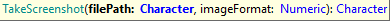
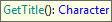
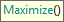
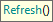
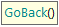
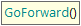
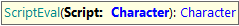

TakeScreenshot Goal: To capture a full screenshot and saving it to an image file. If the file already exists, it is overwritten. Parameters:
Returns: n/a Example of use:
&driver.TakeScreenshot("../photos_wp.png", 0)
GetSourceGoal: To get the source code of the current webpage. Returns: The webpage source-code as a string Example of use: &wp_source = &driver.GetSource()
GetTitle Goal: To get the current webpage title. Returns: The webpage title as a string Example of use: &wp_title = &driver.GetTitle()
Maximize Goal: To maximize the browser window. Example of use: &driver.Maximize()
Refresh Goal: To refresh (reload) the browser webpage. Example of use: &driver.Refresh()
GoBack Goal: To go to the previous page Example of use: &driver.GoBack()
GoForward Goal: To go to the next page. Note that it is required to perform a GoBack command in order for this command could be used. Example of use: &driver.GoForward()
ScriptEval Goal: To run JavaScript code. Parameters:
Returns:
Example of use:
//Change Title to "New Title" using Javascript
&driver.ScriptEval("document.title = 'New Title';")
Notes: JS functions are intended for some specific automation that (for some reason) is it not possible to achieve using traditional UI commands, so this is intended to be used only by experienced users.
|